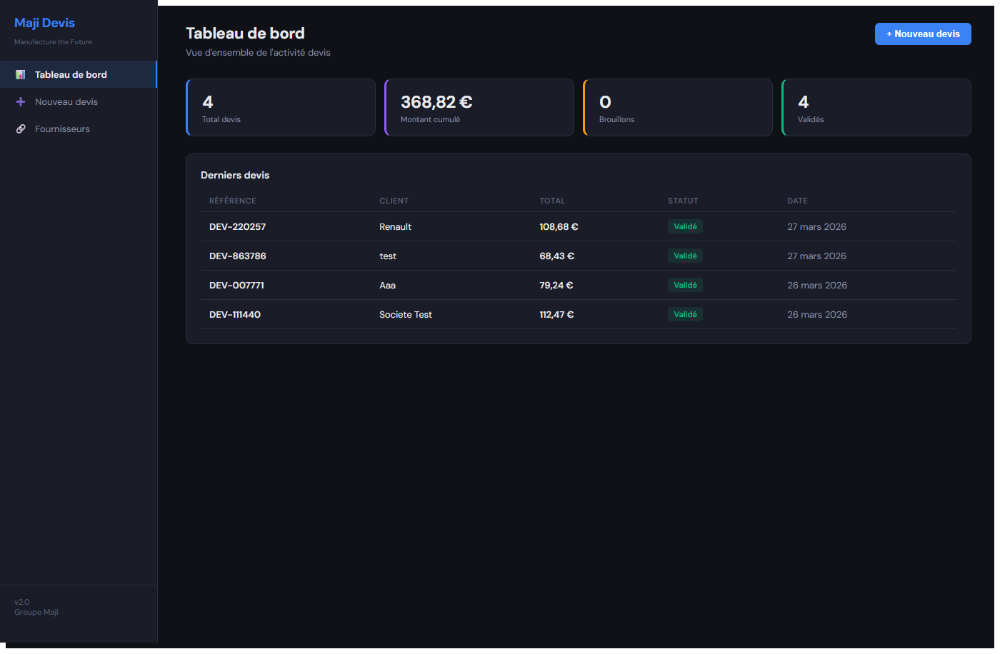
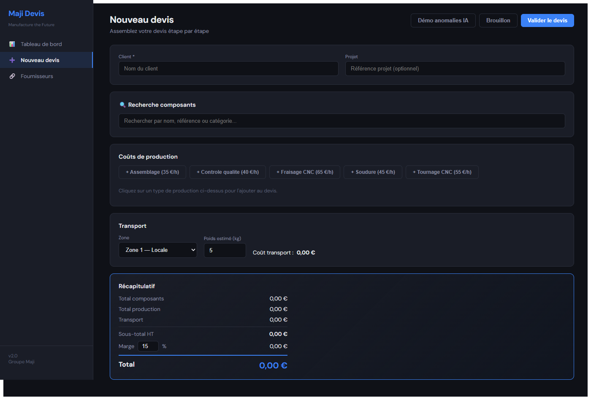
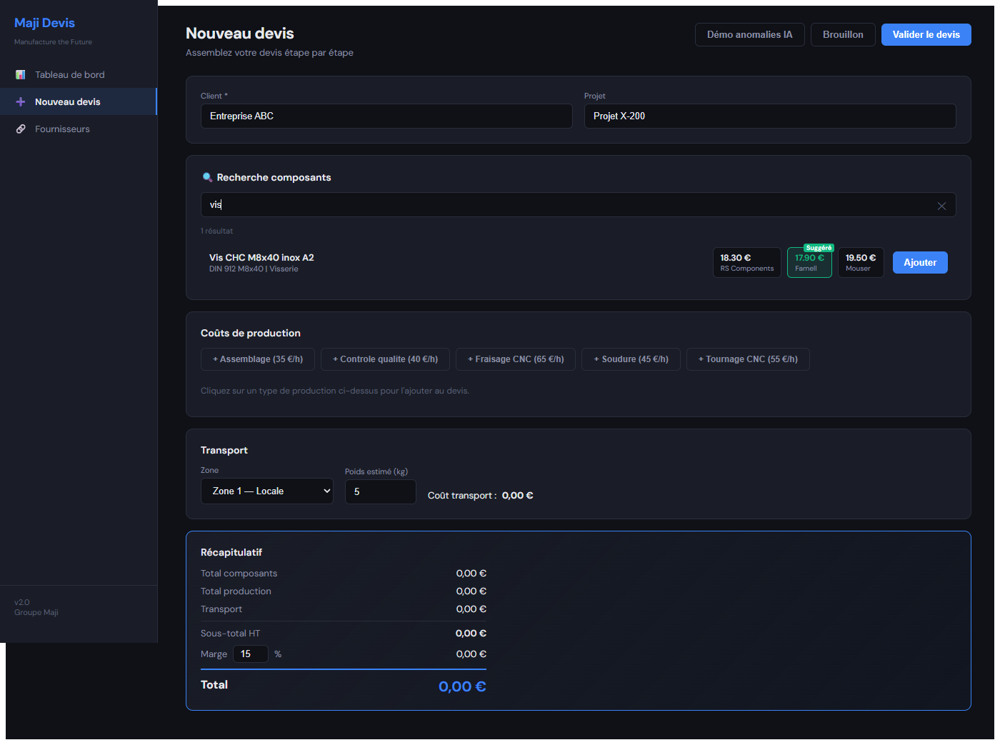
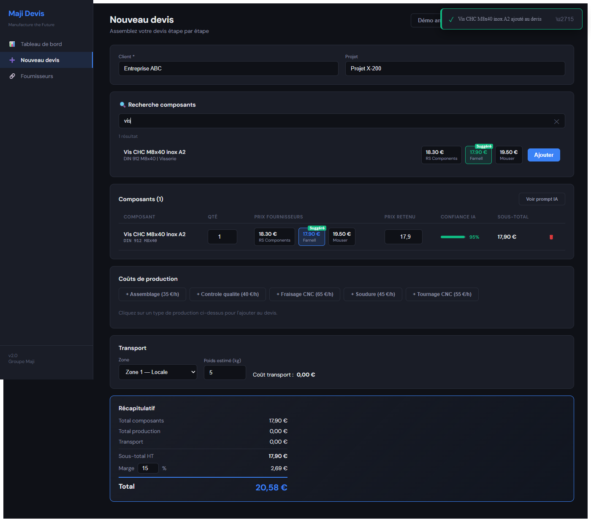
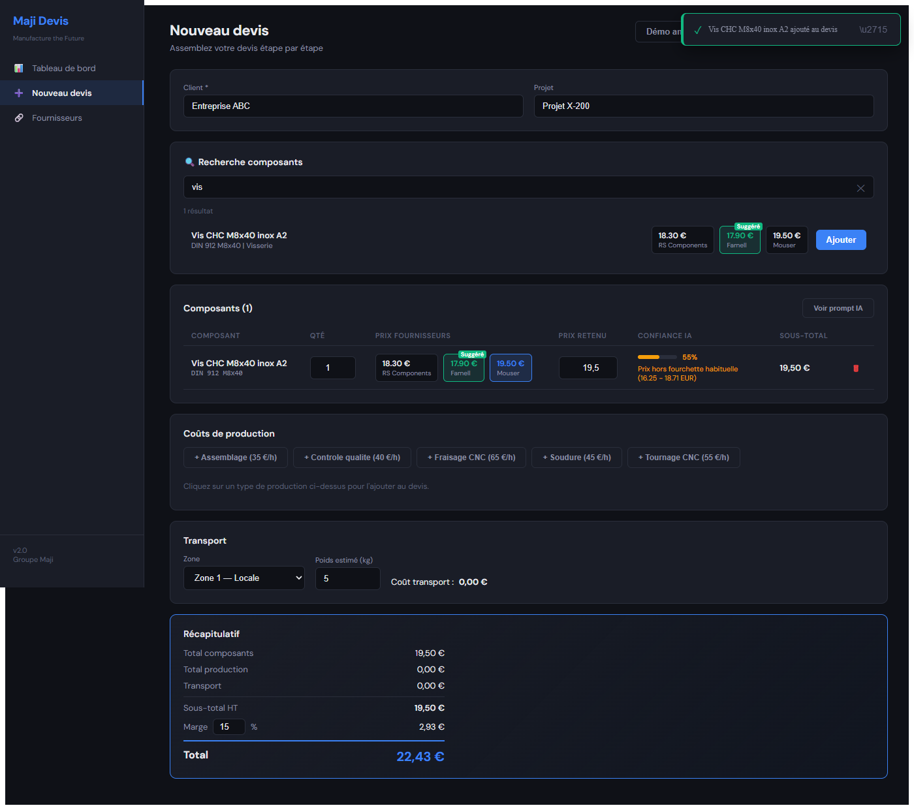
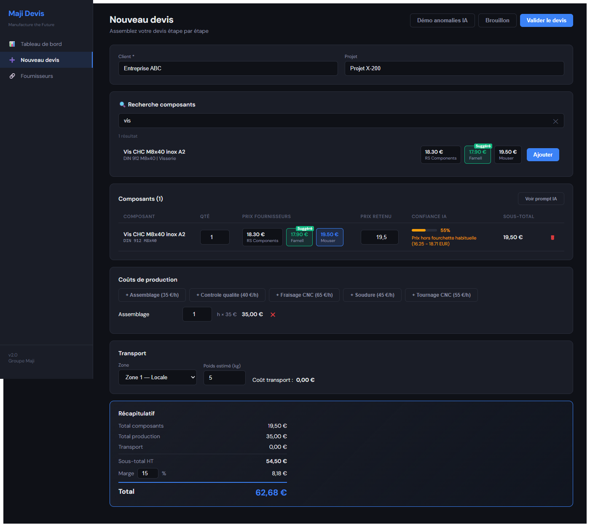
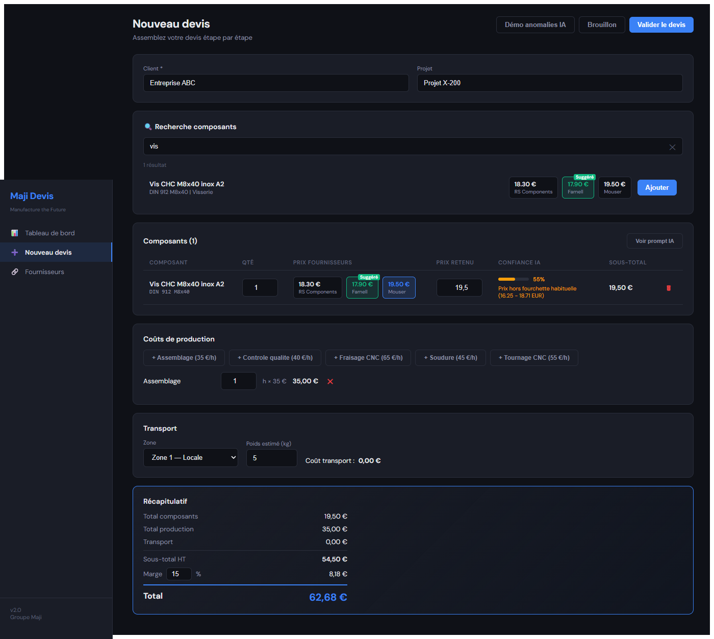
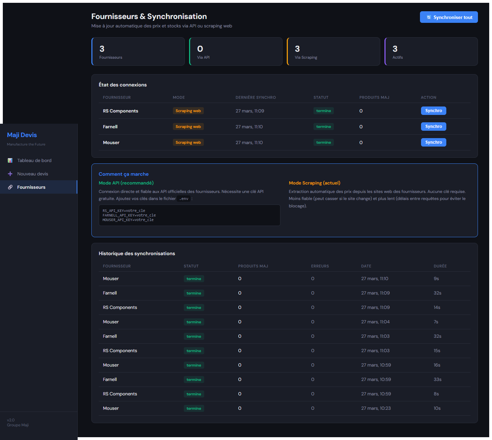

Manufacture the Future - Parcours Utilisateur
https://maji-devis-production.up.railway.app/
Au lancement de l'application, l'utilisateur arrive sur le tableau de bord qui présente une vue d'ensemble de l'activité.
Actions : Cliquer sur une ligne pour voir le détail, ou sur « + Nouveau devis » pour démarrer un chiffrage.

L'utilisateur remplit le nom du client (obligatoire) et éventuellement une référence projet.

L'utilisateur saisit un terme (ex : « vis ») et les résultats s'affichent en temps réel.

Le composant apparaît dans le tableau. Une notification toast confirme l'ajout en haut à droite.

L'utilisateur clique sur la carte Mouser (19,50 €) pour changer le prix retenu.

L'utilisateur ajoute un poste de production en cliquant sur le bouton correspondant.

Vue complète du récapitulatif avec tous les postes détaillés.
Actions finales :
Le devis sera ensuite visible sur le tableau de bord et téléchargeable en PDF.

Gestion des connexions fournisseurs et mise à jour automatique des prix.
| Fonctionnalité | Description |
|---|---|
| Notifications toast | Confirmations et erreurs en haut à droite, disparaissent après 4 secondes |
| Validation formulaire | Champ Client obligatoire - bordure rouge et message si vide |
| Confirmation suppression | Dialogue de confirmation avant de retirer un composant |
| Téléchargement PDF | Depuis le détail d'un devis, bouton pour télécharger en PDF |
| Détection anomalies IA | Score de confiance et alerte si le prix est hors norme |
| Prix cliquables | Clic sur un prix fournisseur pour le sélectionner comme prix retenu |
| Quantité incrémentale | Re-cliquer « Ajouter » incrémente la quantité de +1 |
| Fermeture Escape | Toutes les modales se ferment avec la touche Escape |